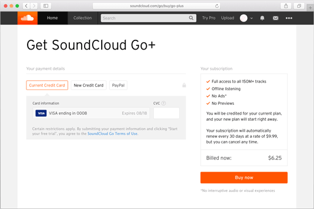
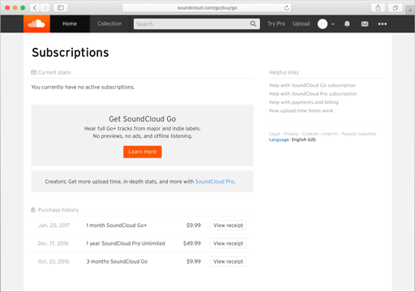
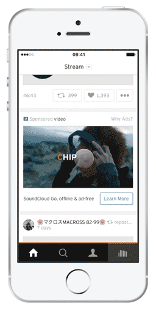
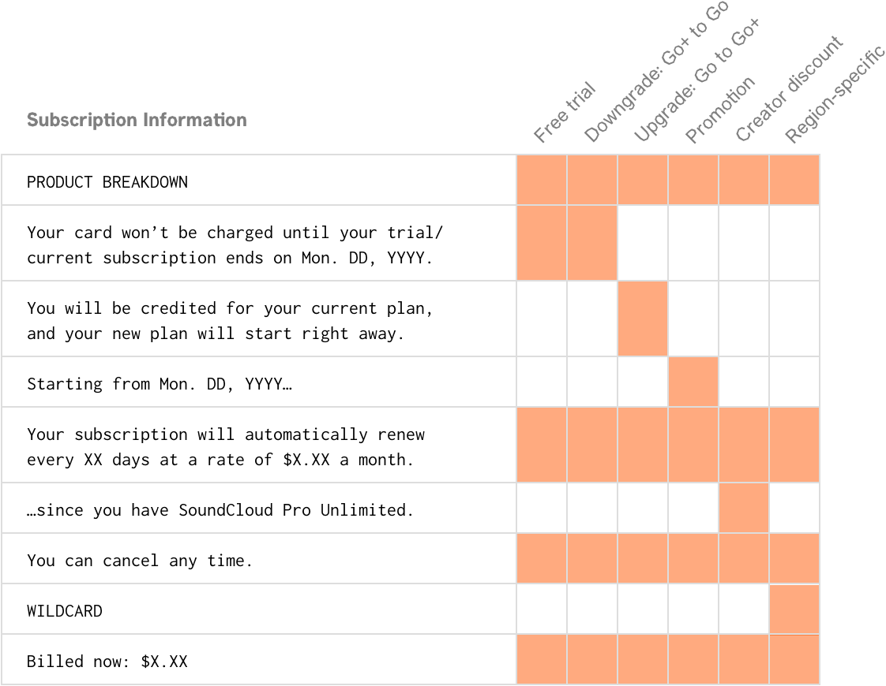
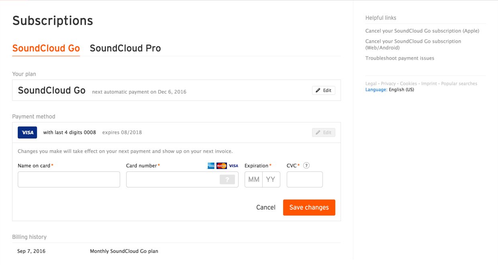
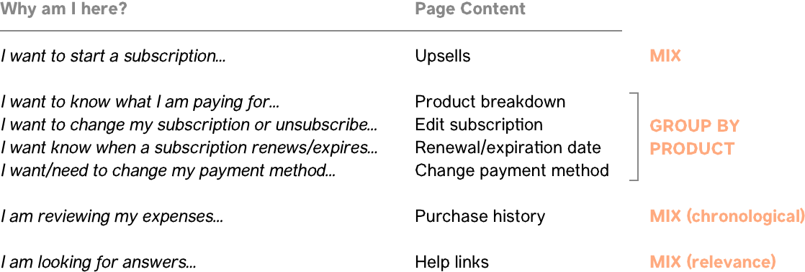
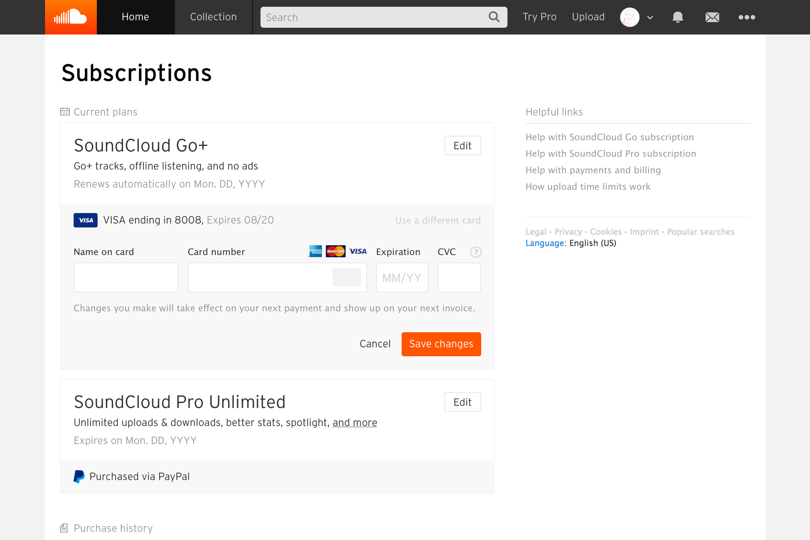
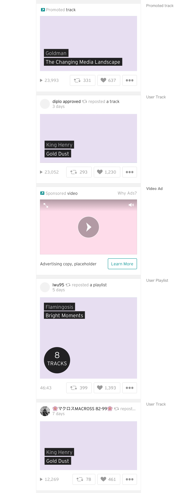
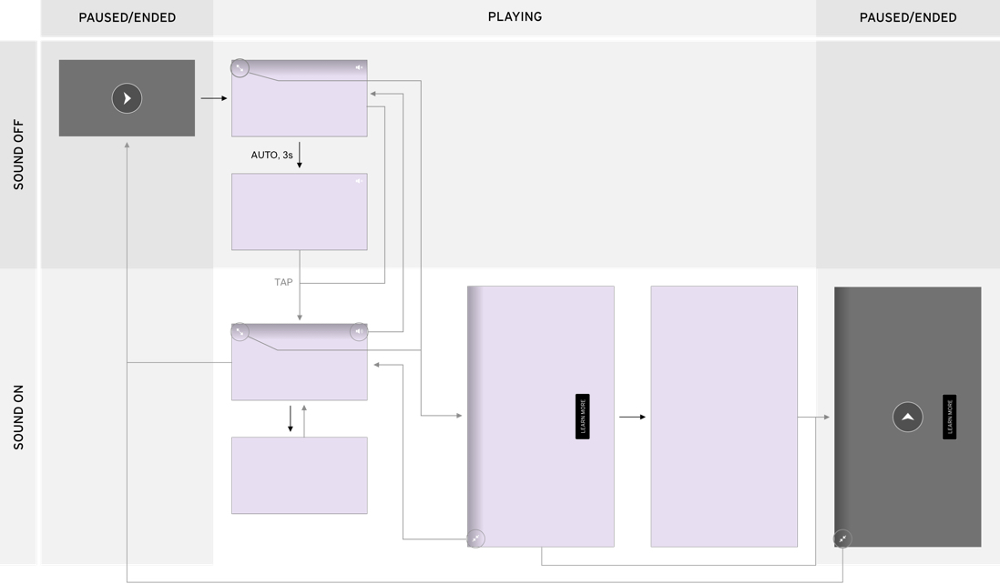

SoundCloud is an online music and audio platform that is used by independent and established creators.
The work shown here is from an internship that I completed in 2016 on SoundCloud's Monetization team, working on product design across various points of SoundCloud's revenue base.
The work shown here is from an internship that I completed in 2016 on SoundCloud's Monetization team, working on product design across various points of SoundCloud's revenue base.
1
A clearer checkout experience
UX & Visual Design
A clearer checkout experience
UX & Visual Design

2
One place to manage your subscriptions
UX, UI, & Visual Design
One place to manage your subscriptions
UX, UI, & Visual Design

3
Video Ads in the Feed
UX, UI & Prototyping
Video Ads in the Feed
UX, UI & Prototyping

✳︎
Subscriptions on SoundCloud
Animations for a post-purchase tour
✳︎
Redesigning checkout for SoundCloud Go
Role
I worked on the redesign of a checkout page for SoundCloud Go, covering the UX writing and early visual designs.
Context
Pricing and billing for SoundCloud Go can take many forms.
In
Ahead of the launch of SoundCloud Go+, we wanted to create a checkout system that would accommodate new variations in pricing and billing gracefully, while explaining them in clear, natural language.
the previous checkout page design
, the billing information was downplayed visually and written in marketing or legal language. From user tests we learned that people carefully read that information, concerned about how and when their card would be charged.
Ahead of the launch of SoundCloud Go+, we wanted to create a checkout system that would accommodate new variations in pricing and billing gracefully, while explaining them in clear, natural language.
Conditional copy modules
The subscription terms can vary by promotions and user-specific conditions. I created small chunks of copy that are combined on the front-end according to those conditions, forming a simple summary.

A layout that accommodates change
We divided the page by content and action—a column for payment information (where you input) and a column for subscription information (where you read).
We also prepared to launch in other countries, where checkout pages are regulated by regional laws that are difficult to anticipate. Because each column can shrink and grow along its own axis, the layout can gracefully accommodate additional content.
We referred to SoundCloud's style guide whenever possible and proposed new styles when variations were appropriate for the context. For example, a gray background across all payment forms make inputs easier to find in figure/ground.
We also prepared to launch in other countries, where checkout pages are regulated by regional laws that are difficult to anticipate. Because each column can shrink and grow along its own axis, the layout can gracefully accommodate additional content.
We referred to SoundCloud's style guide whenever possible and proposed new styles when variations were appropriate for the context. For example, a gray background across all payment forms make inputs easier to find in figure/ground.

✳︎
Reorganizing subscription management
Role
I worked on the redesign of a subscription management page on SoundCloud's website, covering the UX, UI, and visual design.
Context
Ahead of the launch of SoundCloud Go+, we wanted to take the opportunity to make larger revisions to the subscription management page.
Meeting with product managers and community support specialists, we gathered pain points and nice-to-haves in the subscription managing experience.
Meeting with product managers and community support specialists, we gathered pain points and nice-to-haves in the subscription managing experience.

The existing subscriptions page
had separate views for SoundCloud Go and another subscription product called SoundCloud Pro. The Go page was always shown by default, so many Pro subscribers had trouble finding the right information.
Organizing content by user intentions
Although the views for Go and Pro were separate, each page had the same types of information. We matched each type to some user intention that it responded to, and thought about the form of organization that would best serve those intentions.

Putting it all together
We then reorganized the subscription page into one view for managing all of your SoundCloud subscriptions and payments.
We treated the elements of the previous design with larger type and buttons, while carrying forward new visual ideas from the checkout project. To complement the section labels, I designed new micro-icons that reflect user intentions—a calendar to suggest renewal and expiration, and a receipt to suggest reviewing expenses.
We treated the elements of the previous design with larger type and buttons, while carrying forward new visual ideas from the checkout project. To complement the section labels, I designed new micro-icons that reflect user intentions—a calendar to suggest renewal and expiration, and a receipt to suggest reviewing expenses.

✳︎
Video ads in the feed
Role
I led the design of a new advertising format for SoundCloud's mobile app, covering the UX, UI, and prototyping.
Context
The feed has a central presence and a universal reach in the app, and video ads maximize profit for space. We wanted to integrate video ads in the feed without disrupting the visual or audio experience of the SoundCloud app.
A new card for ads
We looked at existing patterns in the feed to design a new ad card format.
The video player uses interface elements from existing video ads, with the exception of a new button for sound.
The video player uses interface elements from existing video ads, with the exception of a new button for sound.

Mapping UI states and engagement
The level of engagement with an ad instance determines the amount of revenue that SoundCloud receives. I mapped the UI states and ways that user interactions would change engagement with audio and video.

Designing visual and audio transitions through a prototype
I worked with interactive prototypes in FramerJS to design the transitions between engagement states.
The prototype allowed me to design and test transitions and rules for video and audio playback. For example, unmuting the ad will fade and pause the music you're listening to; when the ad ends, your music automatically fades back in.
The sales team and product managers found the prototype useful for presentations, while engineers used it as a reference.
The prototype allowed me to design and test transitions and rules for video and audio playback. For example, unmuting the ad will fade and pause the music you're listening to; when the ad ends, your music automatically fades back in.
The sales team and product managers found the prototype useful for presentations, while engineers used it as a reference.
✳︎
Wrapping up
Retrospective
As a designer working on monetization, I struggled with the tension between designing for user experience and designing to fulfill a tech corporation's revenue demands.When I was stuck, I found it helpful to paint the picture around a design decision, using the context to find a response that appropriately balanced the intentions of the user and the system.
Acknowledgements
I'm thankful for my product managers—Brittney Gwynn, John Coates, and Jori Bell—and my hiring manager, Catt Small, as I was given a generous amount of guidance and trust throughout my work as an intern.On all these projects I worked alongside an amazing product design team consisting of Catt, Shanique Shields, Adelle Charles, and Ashley Hopkins.